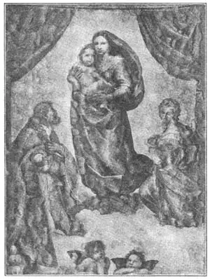

11
A GREAT TEACHER AND A “GREATEST” PUPIL
伟大导师和“最伟大”学生

MANY towns are named for persons—Washington, St. Louis Jacksonville, and others. It is not so often that persons are named for towns, but here is a painter who was named for one. The town was Perugia, in Italy, and the man was called Perugino (Payroo-jee’no). He wasn’t christened Perugino, but most people have forgotten what his real name was. Perugino wasn’t even born in Perugia, but he went to live in that town and started a school for painters there.
You can tell whom some letters are from before you open them, just by the handwriting on the envelop. In the same way you can tell a picture that Perugino has painted even if it hasn’t his name on it. He painted Madonnas and saints and after you have seen several of them, you can recognize others he did, even though you may not be able to tell just how or why. Usually they have their heads bent to one side, a very sweet expression, and usually the figure has one knee bent.
Perugino painted many beautiful pictures, but he is chiefly famous because of one of his pupils. This pupil was a boy who many people feel became the greatest painter of all time. His name is Raphael. Raphael studied with Perugino for three years. By the time he was nineteen years old he had learned everything that his master could teach him, so he started out for himself. He died when he was thirty-seven years old, but he was such a hard worker that he had painted or drawn over a thousand pictures by that time. Indeed, we are told that he died from overwork.
Raphael must have done about one picture a week, and some of his paintings are very large and have many figures in them. The only way he could have made so many, and the way we know he did, was to have his pupils help him. He always painted the faces himself, but his pupils painted the clothes and hands and other less important parts of the pictures.
It would take several books with a picture on each page to show all of Raphael’s paintings. One of the most famous is “The Madonna RAPHAEL del Gran Duca”. It was called so because it was bought by a grand duke who prized it more highly than all his riches. In fact, he was not willing to have it hanging on the wall of his palace or placed in a vault for safe-keeping. He wanted it with him all the time and is said to have carried it with him in his carriage wherever he went so that it would never be out of his sight.
The grand duke is now dead, of course, and “The Madonna del Gran Duca” is in an art gallery in Florence, where every one can see it as often and as long as he likes, if he can afford to go there. How fortunate, you may think, for the people who live in Florence, who can see it every day without cost! Yet I know people living in Florence who have never seen it. Strange? That seems to be the way with people. Some people go thousands of miles and pay thousands of dollars to get there, while those who live almost next door don’t or won’t “go across the street” to see the picture.
Raphael painted another Madonna called “The Madonna of the Chair.” It is a tondo. Do you remember what that is? It is a round picture.
The story is that Raphael was walking one day in the country when he saw a young mother sitting in a doorway with her little baby.
“What a beautiful madonna!” Raphael said to himself. “I must paint her now, on the spot where she is, before she changes.”
He looked around for something to paint on and, in a rubbish heap near by, he saw the round top of a barrel. So he sketched the young woman and her baby then and there with a pencil. And as soon as he reached his home he made the painting of them.
But the most famous picture in the world is another Madonna by Raphael called “The Sistine Madonna” or “Madonna di Sansisto” from the name of the church where it was first placed. It is not there now, however, but in a gallery in Dresden, Germany, where it has a room all by itself, for no other picture is thought worthy to be hung in the same room. [1]
Many Madonnas that I have shown you may be beautiful themselves, but the Holy Child in the pictures may not be beautiful at all. He often looks like a little old man or just a very fat baby, and not a bit what we feel the Son of God should look like. The Christ Child in Raphael’s “Sistine Madonna” is very beautiful. Leaning on the edge of the frame, beneath the feet of the Madonna, are two little angels or cherubs. This idea Raphael got from Fra Bartolommeo, who was a great friend of his. The two other people in the picture who are worshiping the Madonna are Pope Sixtus and Saint Barbara. They, of course, did not live at the time of Christ. They were put in this picture just as Botticelli put two living boys into his picture of the Coronation.

No. 11-2 THE SISTINE MADONNA（《西斯廷圣母》）
RAPHAEL（拉斐尔 作）
courtesy of The University Prints
【中文阅读】
许多城市都以人名命名，像华盛顿、圣路易斯、杰克逊维尔等。人以城市取名的却不多见，不过有一位画家却是按城市取名的。这座城市是意大利的佩鲁贾，而这个人就是佩鲁吉诺。他本名不叫佩鲁吉诺，但大多数人忘记了他的真名。佩鲁吉诺甚至不是出生在佩鲁贾，但他后来到那里生活并开办了一所绘画学校。
有时候，我们会收到一些来信，不用打开信封，只看信封上的笔迹，就能知道是谁寄来的。同样，即使画上没有署名，我们也能认出佩鲁吉诺的画。佩鲁吉诺经常画圣母玛利亚和圣人们的画像。只要看过几幅他的绘画就能认出他的其他作品，尽管不一定能道出所以然来。他画上的人物通常把脑袋倾向一边，脸上带着甜美的表情，常常有条腿跪着。
佩鲁吉诺虽然画过很多好看的画，但主要是因他的一个学生而出名。这个学生是个年纪轻轻的小伙子，许多人觉得他是有史以来最伟大的画家。他的名字是拉斐尔。拉斐尔跟着佩鲁吉诺学习了三年，到19岁时，他已经学会了导师能教他的所有东西，于是开始独立创作。虽然他在37岁时就去世了，但因为他是一位勤奋的画家，所以到去世时他已经画了一千多幅画。事实上，我们听说他死于过度劳累。
拉斐尔差不多一周就画一幅画，而且有些画很大，画面人物众多。他能创作这么多画的方法是让他的学生们帮忙。事实上，我们知道他的确是这么做的。但是他总是亲自画人物的脸部，而让学生画人物的服装、手以及画面上其他不那么重要的部分。
如果印刷拉斐尔的画，每页印一幅，也要印好几本书才能展示完他所有的画。他最有名的一幅画叫做《大公爵的圣母》。这幅画之所以这样命名是因为它被一位大公爵收买，大公爵认为这幅画比他所有的财富都要珍贵。事实上，他不愿意把这幅画挂在宅邸的墙壁上或放在保险柜里。他希望这幅画始终伴随他。据说，他乘马车外出时也带着它，从不让它离开自己的视线。
当然现在这位大公爵已经去世了，而《大公爵的圣母》收藏在佛罗伦萨的一个美术馆里。只要花点路费到佛罗伦萨，任何人都可以进这座美术馆参观这幅画，看多少次，看多久都没关系。我们会想，佛罗伦萨人多幸运啊，因为他们每天不用任何花费就能欣赏这幅画。不过，据我所知，住在佛罗伦萨，却从未看过此画的，大有人在。奇怪吗？人们似乎就是这样。有人千里迢迢，花大笔钱专程来看这幅画，而有些人差不多就一墙之隔，却从没有或就是不愿“多走几步路”来看一看。
拉斐尔还画了另外一幅叫做《椅上圣母》的圣母像。这是一幅圆形画。还记得这是一种什么画吗？它是一幅圆形的画。
据说，有一天拉斐尔在乡间散步，他看见一位年轻的母亲抱着一个婴儿坐在门口。
“多美的一位夫人啊！”拉斐尔自言自语道，“我得趁着她还没改变姿势前赶快把 她画下来。”
他环顾四周想找点可以当做画板的东西。在附近一个垃圾堆，他找到一只圆桶盖。于是，他立马用铅笔勾勒出那位妇人和婴儿的样子。然后，他一到家就画出来了。
但是世界上最著名的画是拉斐尔画的另一幅圣母像，叫《西斯廷圣母》，依它刚开始放置的教堂命名。不过，它现在不在那座教堂了，而在德国德累斯顿的一个美术馆里。在那儿，它被单独放在一间屋子里，因为人们认为其他画不值得与它同挂一屋。 [2]
我所介绍的许多圣母像中的圣母可能都很漂亮，但画中的圣婴却一点也不好看。他看起来经常像一个小老头或一个胖娃娃，完全不像我们想象中上帝之子应该具有的模样。不过，拉斐尔《西斯廷圣母》中的圣婴却很漂亮。画中圣母玛利亚的脚下有两个小天使，他们靠在画框边上。拉斐尔从他好友弗拉·巴托罗米奥那儿获得这个灵感。画中另外两个正在朝觐圣母的人是西克斯图斯教皇和圣徒巴尔巴拉。毫无疑问，他们并不生活在基督时代。拉斐尔把他们放进画中就像波提切利把两个现实中的小男孩放到那幅《圣母加冕图》中一样。